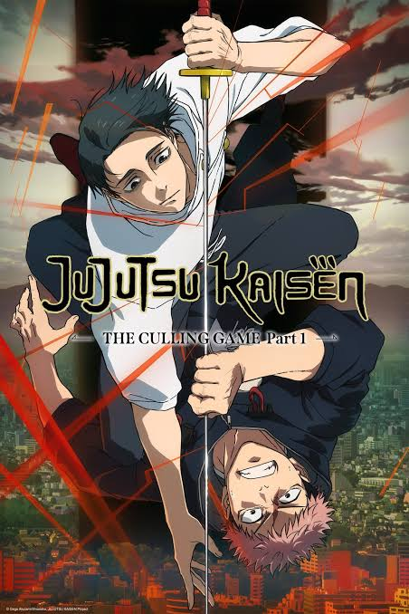
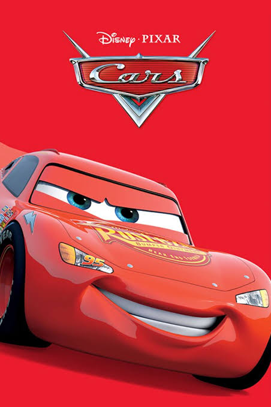
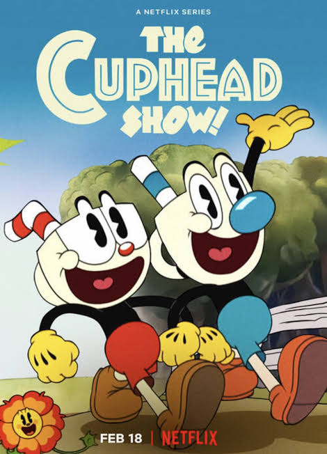
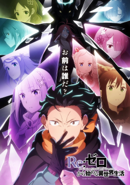

Featured Reviews
Genre: Anime
Jujutsu Kaisen

Reviewer: @GodOfSukunaGlaze_99
Verdikt: 6.5/10 / Rating: ⭐⭐⭐☆☆ (3/5)
Title: Peak animation
But can we address the God-tier Fraud in Season 3/Culling Game? MAPPA is carrying the entire anime industry on its back as usual-the Shibuya arc was pure cinema and the sound design in Culling Game makes every punch feel heavy. BUT I have to take off two stars for how overhyped certain characters are. Specifically Kashimo. The fandom built this guy up like he was "KasHIMo," the ultimate lightning god from 400 years ago who was going to push Sukuna to his limits. Bro spent his entire past life beating up Edo-period rice farmers, hypes up his one-time-use Cursed Technique Mythic Amber for 100 chapters, pulls up to Sukuna, and gets turned into a literal spatial waffle grid in two seconds flat. The "God of Lightning" turned out to be the "God of Farming." Gojo gave us peak fiction, Yuta actually puts in work, and Kashimo gave us high-school physics fan-fiction only to get low-diffed. Watch it for Yuji, Megumi, and MAPPA’s animation budget, but do NOT buy into the Kashimo agenda.
Genre: Animation
Cars (2006)

Reviewer: @PistonCupVeteran
Verdikt: 8.0/10 / Rating: ⭐⭐⭐⭐✬ (4.5/5)
Title: Unironically a masterpiece that only gets better as you get older.
When I was 7, I liked this movie because "cool red race car goes vroom." Watching it back as an adult? It’s arguably Pixar's best visual and thematic work outside of Ratatouille. The transition from Lightning McQueen’s flashy, arrogant, ego-driven world of stadium lights and sponsors to the slow, dusty, forgotten atmosphere of Radiator Springs is executed so well. Doc Hudson’s backstory hits completely differently when you understand life burnout and being replaced by the next shiny thing. Plus, the soundtrack is unmatched-Life is a Highway and Our Town still hit right in the feelings. The only reason it isn't a full 5 stars is because the world-building raises terrifying questions if you think about it for more than 10 seconds (Where did the cars come from? Why are there car-shaped door handles? Was there a Car WWII?). Otherwise, pure nostalgia and great storytelling.
Genre: Animation
The Cuphead Show!

Reviewer: @InkwellResident
Verdikt: 9.0/10 / Rating: ⭐⭐⭐⭐☆ (4/5) (5/5)
Title: Captures the 1930s chaotic energy perfectly, even if it's easier than the game!
If you were expecting a 1-to-1 adaptation of the brutally hard video game, adjust your expectations-this is basically a Saturday morning cartoon homage to classic Fleischer and Looney Tunes animation, and it nails that aesthetic. Cuphead and Mugman have great chemistry (Mugman’s voice actor carries so many of the comedic beats), but King Dice and The Devil absolutely steal every single scene they are in. The slapstick humor is fast-paced, the jazz soundtrack is phenomenal, and the hand-drawn-style art feels super faithful to MDHR’s original vision. It can feel a bit episodic/short at times, and I wish we got a bit more boss fight action from the game, but for a breezy, high-energy show you can binge in an afternoon, it’s a total blast.
Top Picks
Genre: Anime
Re:ZERO -Starting Life in Another World

Reviewer: @Subaru_ReturnByGlaze_
Verdikt: 10/10 / Rating: ⭐⭐⭐⭐⭐ (5/5)
Title: GREATEST ISEKAI OF ALL TIME AND IT IS NOT EVEN CLOSE 🔥 Peak psychological fiction!!
If you think Re:Zero is just another "guy gets transport to another world and gets a harem" show, you need to turn your brain on and REWATCH IT. Subaru Natsuki is literally the most realistic, well-written, and brutally developed protagonist in modern anime history. Bro goes through absolute mental TORMENT, traumatic suffering, and psychological torture just to save the people he loves, and haters still call him annoying? CLEARLY you lack emotional intelligence. Arc 4? Cinema. Arc 6? PEAK FICTION. White Fox puts their entire soul into this adaptation—they literally cut opening and ending themes just to give us 29-minute episodes of pure, unadulterated dialogue and peak character writing. Emilia is top-tier, Rem is iconic, and Echidna's tea party had the entire community in a stranglehold. 10/10, objective masterpiece, easily top 3 anime ever made and I will defend this show until my last breath.
Genre: Anime
Attack on Titan

Reviewer: @Rumbling_Glaze_Demon
Verdikt: 10/10 / Rating: ⭐⭐⭐⭐⭐ (5/5)
Title: Modern day Homer’s Odyssey. Nothing in television history touches this.
People really thought this was just a show about giant naked people eating humans in Season 1, only for Isayama to drop the single greatest plot twist in anime history with the basement reveal. The story completely shifts from survival horror to a generational political thriller about freedom, propaganda, and cycle of hatred. Eren Yeager’s character progression from a whiny kid to the cold, unstoppable force of nature in Season 4 is insane. SAWANO'S SOUNDTRACK ALONE DESERVES AN OSCAR. MAPPA and WIT both cooked to perfection. I don't care what anyone says about the ending, the journey to get there is literally unmatched in all of fiction.
Genre: Anime
Cyberpunk: Edgerunners